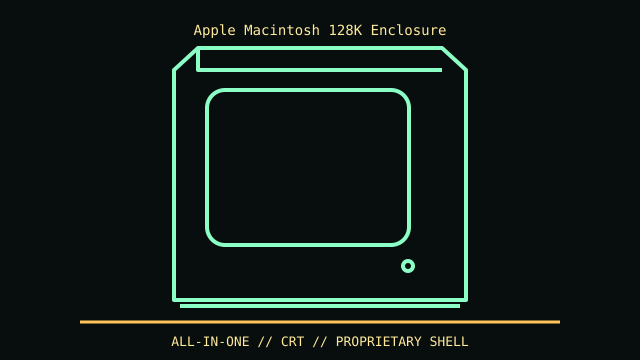

[ MODEL IDENTIFICATION // ORIGINAL MACINTOSH MODEL M0001 (1984) ]
Apple Macintosh 128K Enclosure
Published envelope: 13.6 × 9.6 × 10.9 in (H × W × D); measurement convention varies slightly. Integrated 9-inch CRT in a proprietary compact all-in-one shell.

REVISION CAVEAT: Distinguish Model M0001 128K from 512K and Plus. Similar case plastics can hide board upgrades or changed CRT/analog assemblies.
Specifications & fit
| Catalog subcategory | Vintage desktop and integrated computer systems |
|---|---|
| Model / generation | Original Macintosh Model M0001 (1984) |
| Dimensions / form factor / clearance | Published envelope: 13.6 × 9.6 × 10.9 in (H × W × D); measurement convention varies slightly. Integrated 9-inch CRT in a proprietary compact all-in-one shell. |
| Drive bays | Single built-in 400 KB 3.5-inch floppy mechanism; no standard user-accessible drive bay. |
| Compatibility | Proprietary logic/analog boards, CRT and mounting; neither Mini-ITX nor a generic desktop enclosure. |
| Revision identification | Distinguish Model M0001 128K from 512K and Plus. Similar case plastics can hide board upgrades or changed CRT/analog assemblies. |
Compatibility & preservation notes
Proprietary logic/analog boards, CRT and mounting; neither Mini-ITX nor a generic desktop enclosure.
CRT and analog board can retain lethal voltage. Preserve rear vents, shielding and fragile case tabs; document upgrades before calling it original.
- Record the complete model/SKU, serial/date label, board and bay/backplane identifiers, accessories and manual revision before disassembly.
- For integrated historical systems, follow the exact service manual for CRT, power and keyboard assemblies; do not assume a board or PSU swap is standardized.
- Keep original brackets, fasteners, trays, feet and front-panel parts labeled with the chassis. Do not force components into modified or incomplete specimens.
Manufacturer, archive & standards sources
- Apple Support — Macintosh 128K specificationsPrimary manufacturer or technical-reference source for this named model; use the exact SKU/document revision.
- Dimensions.com — Macintosh 128K envelopeAdditional manufacturer, archival, or dimensional reference. Options and specimen condition can change fit.
Approximate or convention-dependent dimensions are marked as such. Measure the individual unit for restoration, shipping and installation.